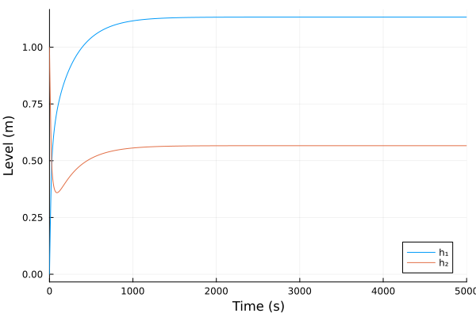
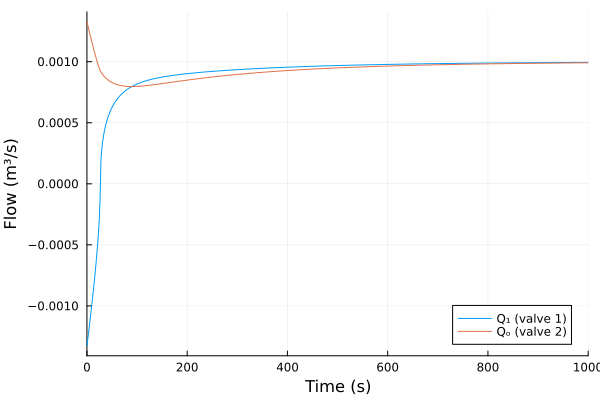
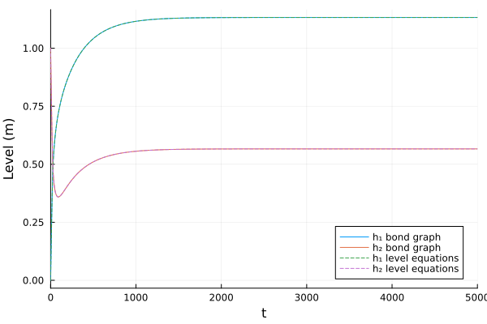

Coupled Tanks
The source files for all examples can be found in /examples.
Introduction
Two tanks in series are the standard liquid-level process plant: a pump fills the first tank, the first tank drains through a valve into the second, and the second drains through a valve to the atmosphere. The valves are orifices, whose flow grows with the square root of the pressure drop across them, so the model is nonlinear. Borutzky (2011, Ch. 4, §4.4.1, pp. 145–148, Fig. 4.7) uses this plant as an example; a schematic is in his Fig. 4.7.
Coupled tanks model
We assume an incompressible liquid of density $\rho$, open tanks with vertical walls and cross-section areas $A_1$, $A_2$, and outlets at the bottom of each tank. The pressure at the bottom of tank $i$, above the atmospheric pressure, is the hydrostatic pressure of its liquid column of level $h_i$ and volume $V_i = A_i h_i$:
\[p_i = \rho\,g\,h_i = \frac{\rho\,g}{A_i}\,V_i .\]
A tank is therefore a linear hydraulic capacitance, $V_i = C_i\,p_i$ with $C_i = A_i/(\rho g)$.
Each valve is an orifice with Bernoulli's square-root law, as Borutzky writes it (Ch. 4, §4.2.1, p. 141, Eq. 4.12):
\[Q = c_d\,a\,\mathrm{sign}(\Delta p)\,\sqrt{\frac{2\,|\Delta p|}{\rho}},\]
with discharge coefficient $c_d$, orifice area $a$ and pressure drop $\Delta p$ in the direction of $Q$. With $\Delta p = \rho g \Delta h$ it is Torricelli's law, $Q = c_d\,a\,\mathrm{sign}(\Delta h)\sqrt{2 g |\Delta h|}$. The sign-and-absolute-value form gives the flow for either direction of the pressure drop. The plain $\sqrt{\Delta p}$ is undefined (a DomainError in Julia) as soon as $\Delta p < 0$: that happens physically when the second tank is fuller than the first and liquid flows back through valve 1, and numerically whenever a solver step overshoots a level that is close to zero.
The volume balance of each tank, with the pump flow $Q_p$, the flow $Q_1$ through valve 1 and the outflow $Q_o$ through valve 2, gives the governing equations in the levels:
\[\begin{aligned} A_1\,\dot{h}_1 &= Q_p - Q_1, & Q_1 &= c_{d}\,a_1\,\mathrm{sign}(h_1 - h_2)\sqrt{2 g\,|h_1 - h_2|},\\ A_2\,\dot{h}_2 &= Q_1 - Q_o, & Q_o &= c_{d}\,a_2\,\mathrm{sign}(h_2)\sqrt{2 g\,|h_2|}. \end{aligned}\]
At steady state both flows equal the pump flow, $Q_1 = Q_o = Q_p$, so the levels are
\[h_2^* = \frac{1}{2g}\left(\frac{Q_p}{c_d\,a_2}\right)^2, \qquad h_1^* = h_2^* + \frac{1}{2g}\left(\frac{Q_p}{c_d\,a_1}\right)^2 .\]
Borutzky linearises the valves around an operating point to get a linear state-space model in the tank pressures (Eq. 4.28), for his parameter-sensitivity analysis. We keep the nonlinear orifices: that is our modelling choice, not the book's. His analytical redundancy relation for the second tank uses the nonlinear valve law in the same sign-safe form, $k_1\,\mathrm{sign}(p_1 - p_2)\sqrt{|p_1 - p_2|}$ (Ch. 4, §4.6.1, p. 167, Eq. 4.94).
See also W. Borutzky, Incremental Bond Graphs, Ch. 4 of W. Borutzky (ed.), Bond Graph Modelling of Engineering Systems, Springer 2011, Figs. 4.7–4.8.
Bond Graph Model
Pressure is the effort and volume flow the flow, so their product is power. Each tank's pressure is common to the flows in and out of it, so each tank is a C element on a 0-junction (common effort). Each valve carries one flow driven by the difference of the pressures on its two sides, so it is an R element on a 1-junction (common flow, efforts summed). The pump is a flow source, and the atmosphere is an effort source of zero (gauge) pressure. This is the bond graph of Borutzky's Fig. 4.8 (p. 146), without its detectors. The library draws it from the model below with bgplot, once it is built.
| Element | Stands for | Parameter |
|---|---|---|
Sf:Qp | the pump | $Q_p$ |
C:tank1, C:tank2 | the tanks | $C_i = A_i/(\rho g)$ |
R:valve1, R:valve2 (drawn Orifice:valve1, Orifice:valve2) | the valves (orifices) | $c_d$, $a_i$, $\rho$ |
Se:atm | the atmosphere | $p = 0$ |
Preliminary Steps
In this example we first define the orifice as a custom element, then build and simulate the bond graph model and check its steady state against the closed form. Finally, we simulate the level equations derived above as a plain ModelingToolkit model and compare the results.
We import the bond-graph toolkit to model the system and OrdinaryDiffEqTsit5 to solve the resulting ODE. We also import ModelingToolkit's independent variable t and derivative D, for the reference model.
using BondGraphToolkit
using BondGraphToolkit.ModelingToolkit: t_nounits as t, D_nounits as D
using OrdinaryDiffEqTsit5
using PlotsSystem Element Definitions
Custom orifice
The library's Resistance is linear, so the orifice is a custom element. @oneport adds the element's ports power and pout, and the law is written in its bond variables, Eq. 4.12 with the pressure drop e and the flow f. It is in conductance form, the flow explicit in the effort:
@oneport function Orifice(; name, cd = 0.6, a = 1e-4, ρ = 1000.0)
@parameters cd = cd # (-) Discharge coefficient
@parameters a = a # (m²) Orifice area
@parameters ρ = ρ # (kg/m³) Liquid density
[f ~ cd * a * sign(e) * sqrt(2 * abs(e) / ρ)]
endOrifice (generic function with 1 method)Parameters
Borutzky gives no numerical values for this example. Ours are a water plant of laboratory size: two tanks of 0.1 m² cross-section, valves of 5 cm² with a sharp-edged orifice's discharge coefficient, and a pump delivering 1 L/s.
ρ = 1000.0 # (kg/m³) Water density
g = 9.81 # (m/s²) Gravitational acceleration
A1 = 0.1 # (m²) Tank 1 cross-section
A2 = 0.1 # (m²) Tank 2 cross-section
a1 = 5e-4 # (m²) Valve 1 orifice area
a2 = 5e-4 # (m²) Valve 2 orifice area
cd = 0.6 # (-) Discharge coefficient of both valves
Qp = 1e-3 # (m³/s) Pump flow0.001Tank 1 starts empty and tank 2 at 1 m, above both steady-state levels, so liquid first flows back from tank 2 into tank 1 and the pressure drop across valve 1 changes sign:
h1₀, h2₀ = 0.0, 1.0 # (m) Initial levels(0.0, 1.0)Elements
The tanks are compliances with $C = A/(\rho g)$ and the stored volume as state, $q = V = A h$:
@named tank1 = Compliance(C = A1 / (ρ * g), q = A1 * h1₀) # (m³/Pa, m³) Tank 1
@named tank2 = Compliance(C = A2 / (ρ * g), q = A2 * h2₀) # (m³/Pa, m³) Tank 2\[ \begin{align} \frac{\mathrm{d}q\left( t \right)}{\mathrm{d}t} &= f\left( t \right) \\ e\left( t \right) &= \mathtt{power.e}\left( t \right) \\ \mathtt{pout.e}\left( t \right) &= \mathtt{power.e}\left( t \right) \\ f\left( t \right) &= - \mathtt{pout.f}\left( t \right) + \mathtt{power.f}\left( t \right) \\ e\left( t \right) &= \frac{q\left( t \right)}{C} \end{align} \]
The valves, the pump and the atmosphere:
@named valve1 = Orifice(cd = cd, a = a1, ρ = ρ) # Valve between the tanks
@named valve2 = Orifice(cd = cd, a = a2, ρ = ρ) # Outlet valve
@named pump = Sf(Qp) # (m³/s) Pump flow Qp
@named atm = Se(0.0) # (Pa) Atmospheric (gauge) pressure\[ \begin{align} e\left( t \right) &= \mathtt{power.e}\left( t \right) \\ \mathtt{pout.e}\left( t \right) &= \mathtt{power.e}\left( t \right) \\ f\left( t \right) &= - \mathtt{pout.f}\left( t \right) + \mathtt{power.f}\left( t \right) \\ e\left( t \right) &= 0 \end{align} \]
Model Construction
The bonds follow Borutzky's Fig. 4.8: every half-arrow points downstream, from the pump to the atmosphere, so a positive flow on any bond is liquid moving towards the outlet.
Tank 1's pressure $p_1$ is common to the pump, the tank and valve 1: a 0-junction. The pump's bond points into it, away from the source (pump => :pout); the tank's bond points out of it into the tank (tank1), so the tank fills when its flow is positive; the bond to valve 1 leaves it (:v1). The flow balance is $Q_p - \dot{V}_1 - Q_1 = 0$.
@named j1 = Junction0(pump => :pout, tank1, :v1)\[ \begin{align} 0 &= \mathrm{connect}\left( pump_{+}pout, core_{+}p1 \right) \\ 0 &= \mathrm{connect}\left( tank1_{+}power, core_{+}p2 \right) \\ 0 &= \mathrm{connect}\left( v1, core_{+}p3 \right) \\ \mathtt{core.p2.e}\left( t \right) &= \mathtt{core.p1.e}\left( t \right) \\ \mathtt{core.p3.e}\left( t \right) &= \mathtt{core.p1.e}\left( t \right) \\ 0 &= \mathtt{core.p1.f}\left( t \right) + \mathtt{core.p2.f}\left( t \right) + \mathtt{core.p3.f}\left( t \right) \\ \mathtt{pump.e}\left( t \right) &= \mathtt{pump.power.e}\left( t \right) \\ \mathtt{pump.pout.e}\left( t \right) &= \mathtt{pump.power.e}\left( t \right) \\ \mathtt{pump.f}\left( t \right) &= - \mathtt{pump.pout.f}\left( t \right) + \mathtt{pump.power.f}\left( t \right) \\ \mathtt{pump.f}\left( t \right) &= 0.001 \\ \frac{\mathrm{d}\mathtt{tank1.q}\left( t \right)}{\mathrm{d}t} &= \mathtt{tank1.f}\left( t \right) \\ \mathtt{tank1.e}\left( t \right) &= \mathtt{tank1.power.e}\left( t \right) \\ \mathtt{tank1.pout.e}\left( t \right) &= \mathtt{tank1.power.e}\left( t \right) \\ \mathtt{tank1.f}\left( t \right) &= - \mathtt{tank1.pout.f}\left( t \right) + \mathtt{tank1.power.f}\left( t \right) \\ \mathtt{tank1.e}\left( t \right) &= \frac{\mathtt{tank1.q}\left( t \right)}{\mathtt{tank1.C}} \end{align} \]
Valve 1 carries one flow $Q_1$ from tank 1 to tank 2: a 1-junction. The bond from tank 1 enters it (:v1 => :in), the bond to the valve points into the valve (valve1) and the bond to tank 2 leaves it (:t2). The effort sum is $p_1 - \Delta p_1 - p_2 = 0$, so the valve sees the drop $\Delta p_1 = p_1 - p_2$, and the drop and the flow are both positive from tank 1 to tank 2.
@named jv1 = Junction1(:v1 => :in, valve1, :t2)\[ \begin{align} 0 &= \mathrm{connect}\left( v1, core_{+}p1 \right) \\ 0 &= \mathrm{connect}\left( valve1_{+}power, core_{+}p2 \right) \\ 0 &= \mathrm{connect}\left( t2, core_{+}p3 \right) \\ - \mathtt{core.p2.f}\left( t \right) &= \mathtt{core.p1.f}\left( t \right) \\ - \mathtt{core.p3.f}\left( t \right) &= \mathtt{core.p1.f}\left( t \right) \\ 0 &= \mathtt{core.p1.e}\left( t \right) - \mathtt{core.p2.e}\left( t \right) - \mathtt{core.p3.e}\left( t \right) \\ \mathtt{valve1.e}\left( t \right) &= \mathtt{valve1.power.e}\left( t \right) \\ \mathtt{valve1.pout.e}\left( t \right) &= \mathtt{valve1.power.e}\left( t \right) \\ \mathtt{valve1.f}\left( t \right) &= - \mathtt{valve1.pout.f}\left( t \right) + \mathtt{valve1.power.f}\left( t \right) \\ \mathtt{valve1.f}\left( t \right) &= sign\left( \mathtt{valve1.e}\left( t \right) \right) ~ \sqrt{\frac{2 ~ \left|\mathtt{valve1.e}\left( t \right)\right|}{\mathtt{valve1.\rho}}} ~ \mathtt{valve1.a} ~ \mathtt{valve1.cd} \end{align} \]
Tank 2 is a 0-junction like tank 1, filled by valve 1's bond (:t2 => :in) and drained by the bond to valve 2 (:v2): $Q_1 - \dot{V}_2 - Q_o = 0$.
@named j2 = Junction0(:t2 => :in, tank2, :v2)\[ \begin{align} 0 &= \mathrm{connect}\left( t2, core_{+}p1 \right) \\ 0 &= \mathrm{connect}\left( tank2_{+}power, core_{+}p2 \right) \\ 0 &= \mathrm{connect}\left( v2, core_{+}p3 \right) \\ \mathtt{core.p2.e}\left( t \right) &= \mathtt{core.p1.e}\left( t \right) \\ \mathtt{core.p3.e}\left( t \right) &= \mathtt{core.p1.e}\left( t \right) \\ 0 &= \mathtt{core.p1.f}\left( t \right) + \mathtt{core.p2.f}\left( t \right) + \mathtt{core.p3.f}\left( t \right) \\ \frac{\mathrm{d}\mathtt{tank2.q}\left( t \right)}{\mathrm{d}t} &= \mathtt{tank2.f}\left( t \right) \\ \mathtt{tank2.e}\left( t \right) &= \mathtt{tank2.power.e}\left( t \right) \\ \mathtt{tank2.pout.e}\left( t \right) &= \mathtt{tank2.power.e}\left( t \right) \\ \mathtt{tank2.f}\left( t \right) &= - \mathtt{tank2.pout.f}\left( t \right) + \mathtt{tank2.power.f}\left( t \right) \\ \mathtt{tank2.e}\left( t \right) &= \frac{\mathtt{tank2.q}\left( t \right)}{\mathtt{tank2.C}} \end{align} \]
Valve 2 carries the outflow $Q_o$ from tank 2 to the atmosphere. The bond to the atmosphere points into the Se:0 element (a bare member atm), as in the book's figure: the atmosphere receives the outflow. The effort sum $p_2 - \Delta p_2 - 0 = 0$ makes the outlet drop $\Delta p_2 = p_2$. The order of the members only sets the drawing: listed first, the atmosphere is drawn on the power path, at the right end as in the book.
@named jv2 = Junction1(:v2 => :in, atm, valve2)\[ \begin{align} 0 &= \mathrm{connect}\left( v2, core_{+}p1 \right) \\ 0 &= \mathrm{connect}\left( atm_{+}power, core_{+}p2 \right) \\ 0 &= \mathrm{connect}\left( valve2_{+}power, core_{+}p3 \right) \\ - \mathtt{core.p2.f}\left( t \right) &= \mathtt{core.p1.f}\left( t \right) \\ - \mathtt{core.p3.f}\left( t \right) &= \mathtt{core.p1.f}\left( t \right) \\ 0 &= \mathtt{core.p1.e}\left( t \right) - \mathtt{core.p2.e}\left( t \right) - \mathtt{core.p3.e}\left( t \right) \\ \mathtt{atm.e}\left( t \right) &= \mathtt{atm.power.e}\left( t \right) \\ \mathtt{atm.pout.e}\left( t \right) &= \mathtt{atm.power.e}\left( t \right) \\ \mathtt{atm.f}\left( t \right) &= - \mathtt{atm.pout.f}\left( t \right) + \mathtt{atm.power.f}\left( t \right) \\ \mathtt{atm.e}\left( t \right) &= 0 \\ \mathtt{valve2.e}\left( t \right) &= \mathtt{valve2.power.e}\left( t \right) \\ \mathtt{valve2.pout.e}\left( t \right) &= \mathtt{valve2.power.e}\left( t \right) \\ \mathtt{valve2.f}\left( t \right) &= - \mathtt{valve2.pout.f}\left( t \right) + \mathtt{valve2.power.f}\left( t \right) \\ \mathtt{valve2.f}\left( t \right) &= sign\left( \mathtt{valve2.e}\left( t \right) \right) ~ \sqrt{\frac{2 ~ \left|\mathtt{valve2.e}\left( t \right)\right|}{\mathtt{valve2.\rho}}} ~ \mathtt{valve2.a} ~ \mathtt{valve2.cd} \end{align} \]
Each pair of free ports with the same name is one bond, joined with connect:
@named tanks = System([connect(j1.v1, jv1.v1), connect(jv1.t2, j2.t2), connect(j2.v2, jv2.v2)], t;
systems = [j1, jv1, j2, jv2])\[ \begin{align} 0 &= \mathrm{connect}\left( j1_{+}v1, jv1_{+}v1 \right) \\ 0 &= \mathrm{connect}\left( jv1_{+}t2, j2_{+}t2 \right) \\ 0 &= \mathrm{connect}\left( j2_{+}v2, jv2_{+}v2 \right) \\ 0 &= \mathrm{connect}\left( pump_{+}pout, core_{+}p1 \right) \\ 0 &= \mathrm{connect}\left( tank1_{+}power, core_{+}p2 \right) \\ 0 &= \mathrm{connect}\left( v1, core_{+}p3 \right) \\ \mathtt{j1.core.p2.e}\left( t \right) &= \mathtt{j1.core.p1.e}\left( t \right) \\ \mathtt{j1.core.p3.e}\left( t \right) &= \mathtt{j1.core.p1.e}\left( t \right) \\ 0 &= \mathtt{j1.core.p1.f}\left( t \right) + \mathtt{j1.core.p2.f}\left( t \right) + \mathtt{j1.core.p3.f}\left( t \right) \\ \mathtt{j1.pump.e}\left( t \right) &= \mathtt{j1.pump.power.e}\left( t \right) \\ \mathtt{j1.pump.pout.e}\left( t \right) &= \mathtt{j1.pump.power.e}\left( t \right) \\ \mathtt{j1.pump.f}\left( t \right) &= - \mathtt{j1.pump.pout.f}\left( t \right) + \mathtt{j1.pump.power.f}\left( t \right) \\ \mathtt{j1.pump.f}\left( t \right) &= 0.001 \\ \frac{\mathrm{d}\mathtt{j1.tank1.q}\left( t \right)}{\mathrm{d}t} &= \mathtt{j1.tank1.f}\left( t \right) \\ \mathtt{j1.tank1.e}\left( t \right) &= \mathtt{j1.tank1.power.e}\left( t \right) \\ \mathtt{j1.tank1.pout.e}\left( t \right) &= \mathtt{j1.tank1.power.e}\left( t \right) \\ \mathtt{j1.tank1.f}\left( t \right) &= - \mathtt{j1.tank1.pout.f}\left( t \right) + \mathtt{j1.tank1.power.f}\left( t \right) \\ \mathtt{j1.tank1.e}\left( t \right) &= \frac{\mathtt{j1.tank1.q}\left( t \right)}{\mathtt{j1.tank1.C}} \\ 0 &= \mathrm{connect}\left( v1, core_{+}p1 \right) \\ 0 &= \mathrm{connect}\left( valve1_{+}power, core_{+}p2 \right) \\ 0 &= \mathrm{connect}\left( t2, core_{+}p3 \right) \\ - \mathtt{jv1.core.p2.f}\left( t \right) &= \mathtt{jv1.core.p1.f}\left( t \right) \\ - \mathtt{jv1.core.p3.f}\left( t \right) &= \mathtt{jv1.core.p1.f}\left( t \right) \\ 0 &= \mathtt{jv1.core.p1.e}\left( t \right) - \mathtt{jv1.core.p2.e}\left( t \right) - \mathtt{jv1.core.p3.e}\left( t \right) \\ \mathtt{jv1.valve1.e}\left( t \right) &= \mathtt{jv1.valve1.power.e}\left( t \right) \\ \mathtt{jv1.valve1.pout.e}\left( t \right) &= \mathtt{jv1.valve1.power.e}\left( t \right) \\ \mathtt{jv1.valve1.f}\left( t \right) &= - \mathtt{jv1.valve1.pout.f}\left( t \right) + \mathtt{jv1.valve1.power.f}\left( t \right) \\ \mathtt{jv1.valve1.f}\left( t \right) &= \mathtt{jv1.valve1.a} ~ \mathtt{jv1.valve1.cd} ~ sign\left( \mathtt{jv1.valve1.e}\left( t \right) \right) ~ \sqrt{\frac{2 ~ \left|\mathtt{jv1.valve1.e}\left( t \right)\right|}{\mathtt{jv1.valve1.\rho}}} \\ 0 &= \mathrm{connect}\left( t2, core_{+}p1 \right) \\ 0 &= \mathrm{connect}\left( tank2_{+}power, core_{+}p2 \right) \\ 0 &= \mathrm{connect}\left( v2, core_{+}p3 \right) \\ \mathtt{j2.core.p2.e}\left( t \right) &= \mathtt{j2.core.p1.e}\left( t \right) \\ \mathtt{j2.core.p3.e}\left( t \right) &= \mathtt{j2.core.p1.e}\left( t \right) \\ 0 &= \mathtt{j2.core.p1.f}\left( t \right) + \mathtt{j2.core.p2.f}\left( t \right) + \mathtt{j2.core.p3.f}\left( t \right) \\ \frac{\mathrm{d}\mathtt{j2.tank2.q}\left( t \right)}{\mathrm{d}t} &= \mathtt{j2.tank2.f}\left( t \right) \\ \mathtt{j2.tank2.e}\left( t \right) &= \mathtt{j2.tank2.power.e}\left( t \right) \\ \mathtt{j2.tank2.pout.e}\left( t \right) &= \mathtt{j2.tank2.power.e}\left( t \right) \\ \mathtt{j2.tank2.f}\left( t \right) &= - \mathtt{j2.tank2.pout.f}\left( t \right) + \mathtt{j2.tank2.power.f}\left( t \right) \\ \mathtt{j2.tank2.e}\left( t \right) &= \frac{\mathtt{j2.tank2.q}\left( t \right)}{\mathtt{j2.tank2.C}} \\ 0 &= \mathrm{connect}\left( v2, core_{+}p1 \right) \\ 0 &= \mathrm{connect}\left( atm_{+}power, core_{+}p2 \right) \\ 0 &= \mathrm{connect}\left( valve2_{+}power, core_{+}p3 \right) \\ - \mathtt{jv2.core.p2.f}\left( t \right) &= \mathtt{jv2.core.p1.f}\left( t \right) \\ - \mathtt{jv2.core.p3.f}\left( t \right) &= \mathtt{jv2.core.p1.f}\left( t \right) \\ 0 &= \mathtt{jv2.core.p1.e}\left( t \right) - \mathtt{jv2.core.p2.e}\left( t \right) - \mathtt{jv2.core.p3.e}\left( t \right) \\ \mathtt{jv2.atm.e}\left( t \right) &= \mathtt{jv2.atm.power.e}\left( t \right) \\ \mathtt{jv2.atm.pout.e}\left( t \right) &= \mathtt{jv2.atm.power.e}\left( t \right) \\ \mathtt{jv2.atm.f}\left( t \right) &= - \mathtt{jv2.atm.pout.f}\left( t \right) + \mathtt{jv2.atm.power.f}\left( t \right) \\ \mathtt{jv2.atm.e}\left( t \right) &= 0 \\ \mathtt{jv2.valve2.e}\left( t \right) &= \mathtt{jv2.valve2.power.e}\left( t \right) \\ \mathtt{jv2.valve2.pout.e}\left( t \right) &= \mathtt{jv2.valve2.power.e}\left( t \right) \\ \mathtt{jv2.valve2.f}\left( t \right) &= - \mathtt{jv2.valve2.pout.f}\left( t \right) + \mathtt{jv2.valve2.power.f}\left( t \right) \\ \mathtt{jv2.valve2.f}\left( t \right) &= \mathtt{jv2.valve2.a} ~ \mathtt{jv2.valve2.cd} ~ sign\left( \mathtt{jv2.valve2.e}\left( t \right) \right) ~ \sqrt{\frac{2 ~ \left|\mathtt{jv2.valve2.e}\left( t \right)\right|}{\mathtt{jv2.valve2.\rho}}} \end{align} \]
The library draws the bond graph from the model, in the order of Borutzky's Fig. 4.8. It labels each element with the constructor that built it, so the valves, R elements in the book (R : R1()), appear as Orifice:
bgplot(tanks)
-->
<!-- Title: BondGraph Pages: 1 -->
<svg width="737pt" height="123pt"
viewBox="0.00 0.00 737.00 123.00" xmlns="http://www.w3.org/2000/svg" xmlns:xlink="http://www.w3.org/1999/xlink">
<g id="graph0" class="graph" transform="scale(1 1) rotate(0) translate(4 119)">
<title>BondGraph</title>
<polygon fill="white" stroke="none" points="-4,4 -4,-119 732.75,-119 732.75,4 -4,4"/>
<!-- j1 -->
<g id="node1" class="node">
<title>j1</title>
<text xml:space="preserve" text-anchor="middle" x="154.75" y="-13.32" font-family="Times,serif" font-size="14.00">0</text>
</g>
<!-- jv1 -->
<g id="node4" class="node">
<title>jv1</title>
<text xml:space="preserve" text-anchor="middle" x="290.62" y="-13.32" font-family="Times,serif" font-size="14.00">1</text>
</g>
<!-- j1&%2345;>jv1 -->
<g id="edge7" class="edge">
<title>j1&%2345;>jv1</title>
<path fill="none" stroke="black" d="M181.56,-18C202.12,-18 231.13,-18 253.91,-18"/>
<polygon fill="black" stroke="black" points="263.69,-18 253.69,-22.5 258.89,-18 253.69,-18 253.69,-18 263.69,-18"/>
</g>
<!-- j1₊pump -->
<g id="node2" class="node">
<title>j1₊pump</title>
<text xml:space="preserve" text-anchor="middle" x="38" y="-13.32" font-family="Times,serif" font-size="14.00">Sf:pump</text>
</g>
<!-- j1₊pump&%2345;>j1 -->
<g id="edge1" class="edge">
<title>j1₊pump&%2345;>j1</title>
<path fill="none" stroke="black" d="M75.94,-18C89.28,-18 104.31,-18 117.58,-18"/>
<polygon fill="black" stroke="black" points="127.58,-18 117.58,-22.5 122.78,-18 117.58,-18 117.58,-18 127.58,-18"/>
</g>
<!-- j1₊tank1 -->
<g id="node3" class="node">
<title>j1₊tank1</title>
<text xml:space="preserve" text-anchor="middle" x="154.75" y="-92.33" font-family="Times,serif" font-size="14.00">C:tank1</text>
</g>
<!-- j1₊tank1&%2345;>j1 -->
<g id="edge2" class="edge">
<title>j1₊tank1&%2345;>j1</title>
<path fill="none" stroke="black" d="M154.75,-69.16C154.75,-58.07 154.75,-46.98 154.75,-35.9"/>
<polygon fill="black" stroke="black" points="154.75,-79.13 150.25,-69.13 154.75,-74.34 154.75,-69.13 154.75,-69.13 154.75,-79.13"/>
</g>
<!-- j2 -->
<g id="node6" class="node">
<title>j2</title>
<text xml:space="preserve" text-anchor="middle" x="426.5" y="-13.32" font-family="Times,serif" font-size="14.00">0</text>
</g>
<!-- jv1&%2345;>j2 -->
<g id="edge8" class="edge">
<title>jv1&%2345;>j2</title>
<path fill="none" stroke="black" d="M317.44,-18C338,-18 367,-18 389.79,-18"/>
<polygon fill="black" stroke="black" points="399.56,-18 389.56,-22.5 394.77,-18 389.56,-18 389.56,-18 399.56,-18"/>
</g>
<!-- jv1₊valve1 -->
<g id="node5" class="node">
<title>jv1₊valve1</title>
<text xml:space="preserve" text-anchor="middle" x="290.62" y="-92.33" font-family="Times,serif" font-size="14.00">Orifice:valve1</text>
</g>
<!-- jv1₊valve1&%2345;>jv1 -->
<g id="edge3" class="edge">
<title>jv1₊valve1&%2345;>jv1</title>
<path fill="none" stroke="black" d="M290.62,-69.16C290.62,-58.07 290.62,-46.98 290.62,-35.9"/>
<polygon fill="black" stroke="black" points="290.63,-79.13 286.13,-69.13 290.63,-74.34 290.63,-69.13 290.63,-69.13 290.63,-79.13"/>
</g>
<!-- jv2 -->
<g id="node8" class="node">
<title>jv2</title>
<text xml:space="preserve" text-anchor="middle" x="562.38" y="-13.32" font-family="Times,serif" font-size="14.00">1</text>
</g>
<!-- j2&%2345;>jv2 -->
<g id="edge9" class="edge">
<title>j2&%2345;>jv2</title>
<path fill="none" stroke="black" d="M453.31,-18C473.87,-18 502.88,-18 525.66,-18"/>
<polygon fill="black" stroke="black" points="535.44,-18 525.44,-22.5 530.64,-18 525.44,-18 525.44,-18 535.44,-18"/>
</g>
<!-- j2₊tank2 -->
<g id="node7" class="node">
<title>j2₊tank2</title>
<text xml:space="preserve" text-anchor="middle" x="426.5" y="-92.33" font-family="Times,serif" font-size="14.00">C:tank2</text>
</g>
<!-- j2₊tank2&%2345;>j2 -->
<g id="edge4" class="edge">
<title>j2₊tank2&%2345;>j2</title>
<path fill="none" stroke="black" d="M426.5,-69.16C426.5,-58.07 426.5,-46.98 426.5,-35.9"/>
<polygon fill="black" stroke="black" points="426.5,-79.13 422,-69.13 426.5,-74.34 426.5,-69.13 426.5,-69.13 426.5,-79.13"/>
</g>
<!-- jv2₊atm -->
<g id="node9" class="node">
<title>jv2₊atm</title>
<text xml:space="preserve" text-anchor="middle" x="695.62" y="-13.32" font-family="Times,serif" font-size="14.00">Se:atm</text>
</g>
<!-- jv2&%2345;>jv2₊atm -->
<g id="edge5" class="edge">
<title>jv2&%2345;>jv2₊atm</title>
<path fill="none" stroke="black" d="M589.31,-18C607.33,-18 631.75,-18 652.54,-18"/>
<polygon fill="black" stroke="black" points="662.51,-18 652.51,-22.5 657.71,-18 652.51,-18 652.51,-18 662.51,-18"/>
</g>
<!-- jv2₊valve2 -->
<g id="node10" class="node">
<title>jv2₊valve2</title>
<text xml:space="preserve" text-anchor="middle" x="562.38" y="-92.33" font-family="Times,serif" font-size="14.00">Orifice:valve2</text>
</g>
<!-- jv2₊valve2&%2345;>jv2 -->
<g id="edge6" class="edge">
<title>jv2₊valve2&%2345;>jv2</title>
<path fill="none" stroke="black" d="M562.38,-69.16C562.38,-58.07 562.38,-46.98 562.38,-35.9"/>
<polygon fill="black" stroke="black" points="562.38,-79.13 557.88,-69.13 562.38,-74.34 562.38,-69.13 562.38,-69.13 562.38,-79.13"/>
</g>
</g>
</svg>
)
Analysing the model
mtkcompile reduces the model to its states: the volumes stored in the two tanks.
sys = mtkcompile(tanks)\[ \begin{align} \frac{\mathrm{d}\mathtt{j2.tank2.q}\left( t \right)}{\mathrm{d}t} &= \mathtt{jv1.valve1.f}\left( t \right) - \mathtt{jv2.valve2.f}\left( t \right) \\ \frac{\mathrm{d}\mathtt{j1.tank1.q}\left( t \right)}{\mathrm{d}t} &= \mathtt{j1.tank1.f}\left( t \right) \end{align} \]
Print system states
unknowns(sys)2-element Vector{SymbolicUtils.BasicSymbolicImpl.var"typeof(BasicSymbolicImpl)"{SymReal}}:
j2₊tank2₊q(t)
j1₊tank1₊q(t)Print system parameters
parameters(sys)8-element Vector{SymbolicUtils.BasicSymbolicImpl.var"typeof(BasicSymbolicImpl)"{SymReal}}:
j1₊tank1₊C
jv1₊valve1₊cd
jv1₊valve1₊a
jv1₊valve1₊ρ
j2₊tank2₊C
jv2₊valve2₊cd
jv2₊valve2₊a
jv2₊valve2₊ρPrint the system's equations in terms of the states
full_equations(sys)\[ \begin{align} \frac{\mathrm{d}\mathtt{j2.tank2.q}\left( t \right)}{\mathrm{d}t} &= \mathtt{jv1.valve1.a} ~ \mathtt{jv1.valve1.cd} ~ sign\left( \frac{\mathtt{j1.tank1.q}\left( t \right)}{\mathtt{j1.tank1.C}} + \frac{ - \mathtt{j2.tank2.q}\left( t \right)}{\mathtt{j2.tank2.C}} \right) ~ \sqrt{\frac{2 ~ \left|\frac{\mathtt{j1.tank1.q}\left( t \right)}{\mathtt{j1.tank1.C}} + \frac{ - \mathtt{j2.tank2.q}\left( t \right)}{\mathtt{j2.tank2.C}}\right|}{\mathtt{jv1.valve1.\rho}}} - \mathtt{jv2.valve2.a} ~ \mathtt{jv2.valve2.cd} ~ sign\left( \frac{\mathtt{j2.tank2.q}\left( t \right)}{\mathtt{j2.tank2.C}} \right) ~ \sqrt{\frac{2 ~ \left|\frac{\mathtt{j2.tank2.q}\left( t \right)}{\mathtt{j2.tank2.C}}\right|}{\mathtt{jv2.valve2.\rho}}} \\ \frac{\mathrm{d}\mathtt{j1.tank1.q}\left( t \right)}{\mathrm{d}t} &= 0.001 - \mathtt{jv1.valve1.a} ~ \mathtt{jv1.valve1.cd} ~ sign\left( \frac{\mathtt{j1.tank1.q}\left( t \right)}{\mathtt{j1.tank1.C}} + \frac{ - \mathtt{j2.tank2.q}\left( t \right)}{\mathtt{j2.tank2.C}} \right) ~ \sqrt{\frac{2 ~ \left|\frac{\mathtt{j1.tank1.q}\left( t \right)}{\mathtt{j1.tank1.C}} + \frac{ - \mathtt{j2.tank2.q}\left( t \right)}{\mathtt{j2.tank2.C}}\right|}{\mathtt{jv1.valve1.\rho}}} \end{align} \]
Generated equations against the hand derivation
bgequations returns the same equations with the names we choose. We rename the stored volumes to $V_1$, $V_2$ and the parameters to symbols of the introduction (inside a let, so the Julia values A1, cd, … keep their numbers):
let
@variables V1(t) V2(t)
@parameters C1 C2 cd a1 a2 ρ
bgequations(tanks; rename = Dict(j1.tank1.q => V1, j2.tank2.q => V2,
j1.tank1.C => C1, j2.tank2.C => C2,
jv1.valve1.cd => cd, jv2.valve2.cd => cd,
jv1.valve1.a => a1, jv2.valve2.a => a2,
jv1.valve1.ρ => ρ, jv2.valve2.ρ => ρ))
end\[ \begin{align} \frac{\mathrm{d}\mathtt{V2}\left( t \right)}{\mathrm{d}t} &= \mathtt{a1} ~ \mathtt{cd} ~ sign\left( \frac{\mathtt{V1}\left( t \right)}{\mathtt{C1}} + \frac{ - \mathtt{V2}\left( t \right)}{\mathtt{C2}} \right) ~ \sqrt{\frac{2 ~ \left|\frac{\mathtt{V1}\left( t \right)}{\mathtt{C1}} + \frac{ - \mathtt{V2}\left( t \right)}{\mathtt{C2}}\right|}{\rho}} - \mathtt{a2} ~ \mathtt{cd} ~ sign\left( \frac{\mathtt{V2}\left( t \right)}{\mathtt{C2}} \right) ~ \sqrt{\frac{2 ~ \left|\frac{\mathtt{V2}\left( t \right)}{\mathtt{C2}}\right|}{\rho}} \\ \frac{\mathrm{d}\mathtt{V1}\left( t \right)}{\mathrm{d}t} &= 0.001 - \mathtt{a1} ~ \mathtt{cd} ~ sign\left( \frac{\mathtt{V1}\left( t \right)}{\mathtt{C1}} + \frac{ - \mathtt{V2}\left( t \right)}{\mathtt{C2}} \right) ~ \sqrt{\frac{2 ~ \left|\frac{\mathtt{V1}\left( t \right)}{\mathtt{C1}} + \frac{ - \mathtt{V2}\left( t \right)}{\mathtt{C2}}\right|}{\rho}} \end{align} \]
The pump flow appears as its value. The tank pressures are $p_i = V_i/C_i$, so the arguments of the square roots are $p_1 - p_2$ for valve 1 and $p_2$ for valve 2, as the two 1-junctions require. With $V_i = A_i h_i$, $C_i = A_i/(\rho g)$ and $p_i = \rho g h_i$, and $\sqrt{2\rho g |\Delta h|/\rho} = \sqrt{2 g |\Delta h|}$, the two equations are the level equations of the introduction.
System Simulations
Bond graph model
Define the simulation time: long enough for the levels to settle.
tspan = (0.0, 5000.0)(0.0, 5000.0)Generate an ODEProblem, with the initial volumes given to the tanks:
prob = ODEProblem(sys, [], tspan)ODEProblem with uType Vector{Float64} and tType Float64. In-place: true
Initialization status: FULLY_DETERMINED
Non-trivial mass matrix: false
timespan: (0.0, 5000.0)
u0: 2-element Vector{Float64}:
0.1
0.0Use solve to simulate the system. Tight tolerances let us compare it with the reference model at the end.
sol = solve(prob, Tsit5(), reltol = 1e-10, abstol = 1e-12)retcode: Success
Interpolation: specialized 4th order "free" interpolation
t: 322-element Vector{Float64}:
0.0
0.005704404982073619
0.057980387476939246
0.2825974292477336
0.6392697257322492
1.0514124343502391
1.565917703584419
2.149962582616615
2.8138969039009956
3.540378533162784
⋮
3802.5629364473443
3922.643466088352
4051.062554602695
4188.953596388488
4337.68258571554
4498.915650170676
4674.709504311465
4867.633792402622
5000.0
u: 322-element Vector{Vector{Float64}}:
[0.1, 0.0]
[0.09998484041091057, 1.3284073645893366e-5]
[0.0998459927458365, 0.00013497100438575476]
[0.0992509784838548, 0.0006567985591758894]
[0.09831141840571592, 0.001481971522472228]
[0.0972338002799527, 0.00243019947853162]
[0.09590068954001878, 0.0036059658136845096]
[0.094403780906524, 0.004929873728801418]
[0.09272331916686681, 0.006420887955985101]
[0.0909104621613929, 0.008035209887209257]
⋮
[0.056631475076955755, 0.11326298072094096]
[0.05663150172498191, 0.11326302383835861]
[0.05663152048659958, 0.11326305419529605]
[0.05663153335944427, 0.11326307502399743]
[0.056631541935317706, 0.11326308890005238]
[0.05663154745793466, 0.11326309783583502]
[0.05663155087689084, 0.11326310336782311]
[0.05663155289783872, 0.11326310663779032]
[0.05663155369165983, 0.11326310792221646]The levels are the stored volumes over the tank areas:
plot(sol, idxs = [j1.tank1.q / A1, j2.tank2.q / A2], labels = ["h₁" "h₂"],
xlabel = "Time (s)", ylabel = "Level (m)")
The flow through valve 1 is negative at first, liquid flowing back from tank 2 into tank 1, until the levels cross; both valve flows then rise to the pump flow:
plot(sol, idxs = [jv1.valve1.f, jv2.valve2.f], labels = ["Q₁ (valve 1)" "Qₒ (valve 2)"],
xlabel = "Time (s)", ylabel = "Flow (m³/s)", xlims = (0, 1000))
Steady state
The closed-form steady-state levels of the introduction:
h2ss = (Qp / (cd * a2))^2 / 2g
h1ss = h2ss + (Qp / (cd * a1))^2 / 2g
(h1ss, h2ss)(1.1326311020500623, 0.5663155510250312)The difference between the simulated levels at the end of the run and the closed form, small once the transient has decayed:
(sol[j1.tank1.q][end] / A1 - h1ss, sol[j2.tank2.q][end] / A2 - h2ss)(-2.28278977942864e-8, -1.4108432977444352e-8)Coupled tanks model
The reference model is the level equations derived by hand, with the same parameter values and initial levels. It is written in Torricelli's form, with $g$ and no density, so it does not reuse the bond graph's pressures:
@variables h1(t) = h1₀ h2(t) = h2₀ # (m) Tank levels
@variables Q1(t) Qo(t) # (m³/s) Valve flows
@named ref = System([A1 * D(h1) ~ Qp - Q1,
A2 * D(h2) ~ Q1 - Qo,
Q1 ~ cd * a1 * sign(h1 - h2) * sqrt(2g * abs(h1 - h2)),
Qo ~ cd * a2 * sign(h2) * sqrt(2g * abs(h2))], t)\[ \begin{align} 0.1 ~ \frac{\mathrm{d}\mathtt{h1}\left( t \right)}{\mathrm{d}t} &= 0.001 - \mathtt{Q1}\left( t \right) \\ 0.1 ~ \frac{\mathrm{d}\mathtt{h2}\left( t \right)}{\mathrm{d}t} &= \mathtt{Q1}\left( t \right) - \mathtt{Qo}\left( t \right) \\ \mathtt{Q1}\left( t \right) &= 0.0003 ~ sign\left( \mathtt{h1}\left( t \right) - \mathtt{h2}\left( t \right) \right) ~ \sqrt{19.62 ~ \left|\mathtt{h1}\left( t \right) - \mathtt{h2}\left( t \right)\right|} \\ \mathtt{Qo}\left( t \right) &= 0.0003 ~ sign\left( \mathtt{h2}\left( t \right) \right) ~ \sqrt{19.62 ~ \left|\mathtt{h2}\left( t \right)\right|} \end{align} \]
We compile and solve it as the bond graph model, with the same time span and tolerances.
ref_sol = solve(ODEProblem(mtkcompile(ref), [], tspan), Tsit5(), reltol = 1e-10, abstol = 1e-12);Compare models
The levels of the bond graph (solid) against the level equations (dashed):
plot(sol, idxs = [j1.tank1.q / A1, j2.tank2.q / A2], labels = ["h₁ bond graph" "h₂ bond graph"],
xlabel = "Time (s)", ylabel = "Level (m)")
plot!(ref_sol, idxs = [h1, h2], labels = ["h₁ level equations" "h₂ level equations"], linestyle = :dash)
On a common time grid, the largest difference between the two models, in the two levels:
tgrid = range(tspan..., length = 1001)
(maximum(abs, sol(tgrid; idxs = j1.tank1.q / A1).u - ref_sol(tgrid; idxs = h1).u),
maximum(abs, sol(tgrid; idxs = j2.tank2.q / A2).u - ref_sol(tgrid; idxs = h2).u))(6.881660574720172e-9, 6.6354474692609244e-9)The bond graph model, with its custom sign-safe orifice, reproduces the hand-derived level dynamics, through the reversal of the flow in valve 1, and settles at the closed-form steady-state levels.
This page was generated using Literate.jl.